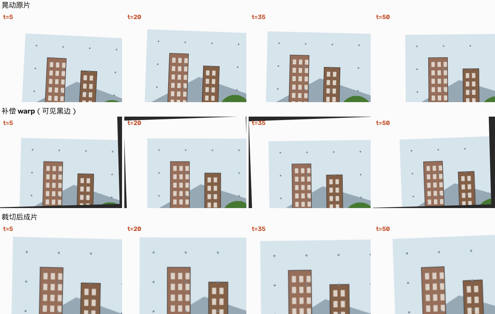
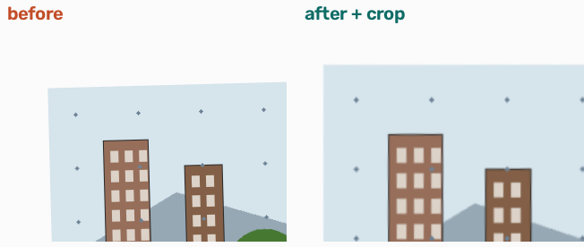
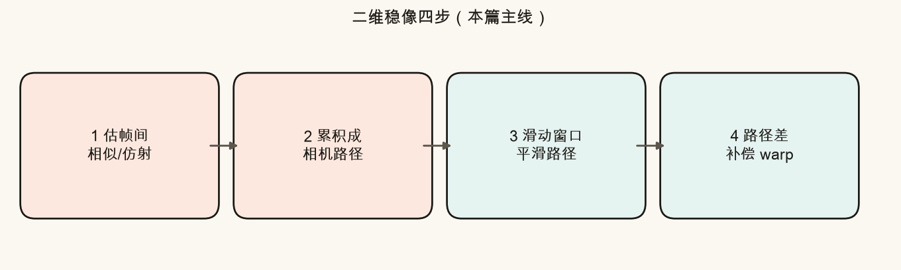
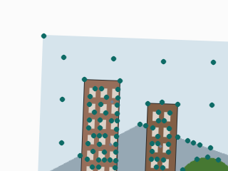
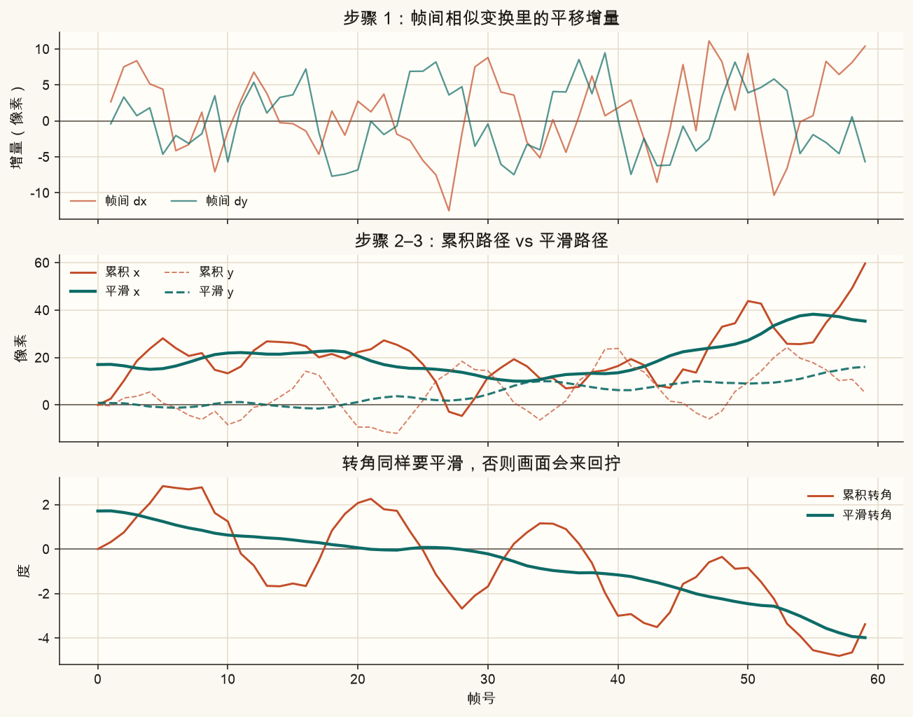
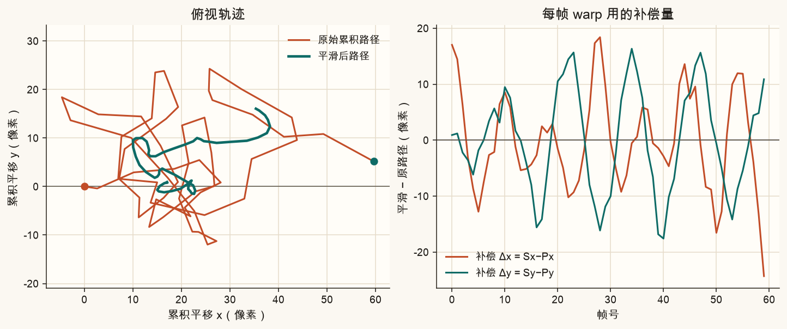
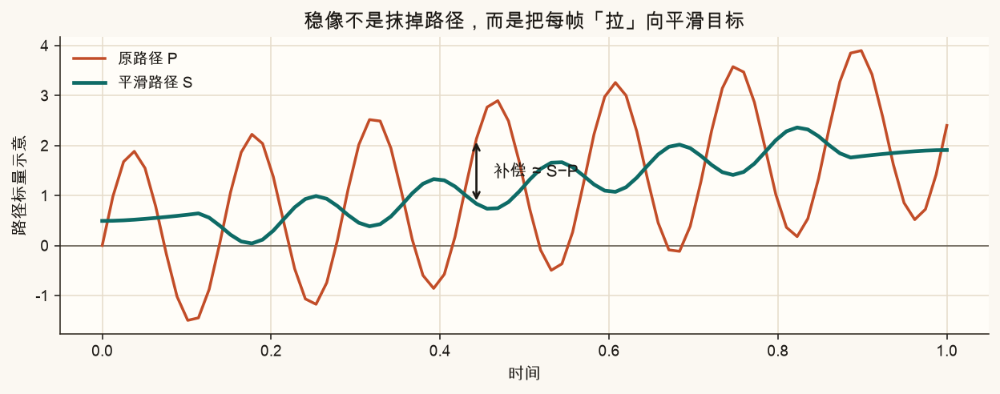
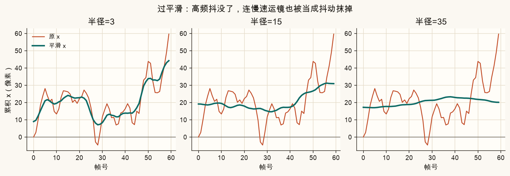
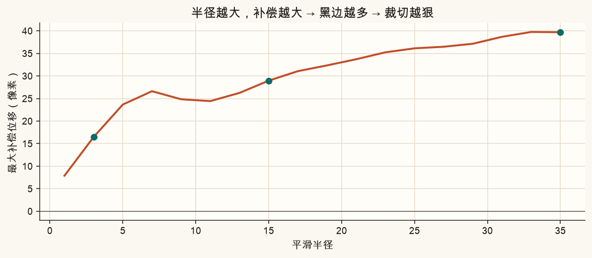

第 19 篇 · 防抖入门 · 约 55 分钟
手持视频为什么晃？因为每一帧相对上一帧都在「偷偷挪一点」。本篇把挪动估出来、串成一条相机路径，再把路径抹平滑，最后用「原路径相对平滑路径的差」把画面 warp 回去。你会看见：稳，来自路径差；过平滑，会漂、会吃掉视野。
把视频想成「一串连续的取景框」。你以为自己在慢慢向右跟拍，其实手还叠了高频小抖：左右颠、微微拧。
结果是：楼边在画面里跳、地平线来回拧。人眼对这种高频、无规律的运动特别敏感；故意的慢速运镜反而可以保留——那是叙事需要的。

ch19_shake_demo.mp4 / ch19_stable_demo.mp4 方便连播对比。
本篇的「二维」是指：整幅画面用同一个相似或仿射变换来描述帧间运动。它假设场景近似平面、或相机运动以旋转/小平移为主。大景深、近物大视差时会不够——那是后面 3D 稳像的事。
经典二维视觉防抖可以拆成四句话。先记住流程，再逐段拆开。

一句话：稳，不是把运动全删掉，而是把运动改成你想要的那条更顺的曲线。
两帧之间，多数像素在动，但「整体」往往像一块板在平移、旋转、略缩放。这正是第 2 篇的相似变换（转 + 等比缩放 + 平移，4 个数）或仿射（再加切变，6 个数）。
做法（脚本里的实现）：
goodFeaturesToTrack 选一批好跟踪的角点。calcOpticalFlowPyrLK 找到它们在下一帧的位置。estimateAffinePartial2D（相似）或 estimateAffine2D（仿射）+ RANSAC，从点对里估出 2×3 矩阵。pts = cv2.goodFeaturesToTrack(prev_gray, ...)
nxt, st, _ = cv2.calcOpticalFlowPyrLK(prev_gray, gray, pts, None, ...)
M, _ = cv2.estimateAffinePartial2D(p0, p1, method=cv2.RANSAC)
# M ≈ [[s·cosθ, −s·sinθ, dx],
# [s·sinθ, s·cosθ, dy]]从矩阵里抽出三个「人话参数」就够本篇用了：
dx, dy = 平移； θ = atan2(M10, M00)
白话：dx/dy 是画面整体往哪挪；θ 是整体拧了多少度。缩放 s 在手持短视频里常接近 1，本篇补偿时按 1 处理，先把平移和转角弄懂。

相似还是仿射？手持防抖入门常用相似：参数少、更稳。仿射能吃一点切变，但对噪声更敏感。脚本默认相似；你若改成仿射，路径分量会多两个「切变」自由度，平滑时同样逐分量做即可。
帧间的 dx、dy、θ 只是「这一步迈了多大」。要描述「从开头到现在相机在哪」，需要累加：
X0=0, Xk = dx1 + dx2 + … + dxk
Y、θ 同理。得到三条随帧号变化的曲线，合称相机路径（trajectory）。
生活类比：你每秒记下「这一步向东几米、向北几米」；把步子加起来，才画出整条散步路线。防抖要平滑的，是这条路线，不是单独某一步。

严格说，带旋转时平移的累积要用旋转矩阵链式相乘，不能简单标量相加。入门教程（以及本篇脚本）用「先抽 dx/dy/θ，再分别 cumsum」——在转角很小、主要是抖的时候够用，也最好讲。工程里也会直接对 2×3 / 3×3 矩阵做李群平滑，那是进阶话题。
原始路径毛刺多 = 高频抖动。最简单的低通：滑动平均。半径为 R 时，第 k 帧的平滑值是左右各 R 帧（共 2R+1 帧）的平均。
Sk = (Pk−R + … + Pk + … + Pk+R) / (2R+1)
白话：看前后一小段「邻居」，取中庸。R 越大，曲线越钝、越稳；但也越跟不上你故意的转弯和加速。
脚本用两端反射填充，避免开头结尾被零填充拉歪：
def moving_average(arr, radius):
k = 2 * radius + 1
pad = np.pad(arr, (radius, radius), mode="reflect")
return np.convolve(pad, np.ones(k) / k, mode="valid")
平滑路径 S 是「我们希望相机当时在的位置」。实际路径是 P。差一下：
补偿 δk = Sk − Pk
白话：这一帧实际偏右了 5 像素，平滑目标只要偏右 1 像素，就把画面往左拉 4 像素——让内容看起来像走在 S 上。

对平移和转角分别算 δx、δy、δθ，拼成相似矩阵，再 warpAffine：
ddx = smooth_x[i] - path_x[i]
ddy = smooth_y[i] - path_y[i]
dda = smooth_a[i] - path_a[i]
M = sim_matrix(ddx, ddy, dda) # 2×3
stable = cv2.warpAffine(frame, M, (W, H), borderValue=(40,40,40))warp 之后，原来在画框里的内容被挪/拧到新位置，画框四角往往会空出黑边（没有像素可填）。所以稳像几乎总是搭配裁切：丢掉一圈边，再放大回输出分辨率——视野变窄，换来满幅无黑边。
补偿用的是「整段视频都算完」的离线平滑：第 k 帧的 Sk 用到了未来帧。实时预览要用因果滤波（只看过去），或固定延迟。手机 EIS 常在两者之间折中。本篇先把离线版直觉立住。
把半径拧到很大，会发生两件讨厌的事：


经验口感（本篇合成数据上）：半径大约覆盖「你想压掉的抖动周期」的几分之一到一倍，先从 5–10 试；看到构图发漂，就减小半径，而不是一味加大。
下面用合成路径模拟「故意向右运镜 + 高频抖动」。拖动平滑半径和抖动幅度，看青色目标路径如何变，以及补偿有多大（预示裁切压力）。
脚本会：合成大场景 → 按「运镜+抖动」渲染晃动帧 → 光流估帧间相似 → 累积/平滑/补偿 → 出对照图与两段短视频。
cd 视频图片拼接防抖
source .venv/bin/activate
MPLCONFIGDIR=/tmp/mpl-cache python code/ch19_stabilize_2d.py成功时终端出现「自检通过」，并写出：
assets/figures/ch19_pipeline.png、ch19_comp_idea.png、ch19_path_compare.png、ch19_components.png、ch19_oversmooth.png、ch19_crop_cost.pngassets/images/ch19_before_after.png、ch19_frame_pair.png、ch19_features.pngch19_shake_demo.mp4、ch19_stable_demo.mp4（若本机 VideoWriter 可用）ch19_my_path.png、ch19_my_strip.png、ch19_my_crop.png打开 code/ch19_stabilize_2d.py 顶部「改这里」。只影响 ch19_my_*.png；课文对照图仍按固定参数重画。
MY_SMOOTH_RADIUS 改成 2，再改成 25，对比 ch19_my_path.png：半径大时青色是否更「平」、补偿是否更大。MY_SHAKE_AMP 改成 3 与 18，看 ch19_my_strip.png 稳前稳后差异。MY_PAN_SPEED 改成 0（几乎不运镜）再改成 3.0，结合大半径，体会「漂」主要来自抹掉低频运镜。ch19_my_crop.png 上青色裁切框：半径/幅度越大，框往往越往里缩。先自己答，再展开。
估帧间相似/仿射 → 累积路径 → 平滑 → 用路径差补偿 warp。成片观感上的「稳」直接来自第 4 步：按 δ=S−P 去 warp；前三步是在准备这条 δ。
观感对应的是相机随时间走的轨迹。只平滑增量，累积后低频偏差仍可能乱爬；对累积路径低通，等价于约束「整条路线」别抖。帧间增量平均也不能直接表达「希望相机现在在哪」。
warp 把内容挪/拧离原画框，四角会出现无像素的黑边。裁切丢掉一圈边再放大，换来满幅无黑边的成片，代价是视野变窄（等效变焦）。
漂：故意的慢速运镜被当成抖动抹掉，平滑路径几乎不跟着走，主体在构图里慢慢滑移。它主要来自平滑过猛（低频也被滤），不一定等于「抖动幅度大」。抖动大主要增加高频毛刺与补偿峰值；过平滑则伤害低频意图。
estimateAffinePartial2D 与 estimateAffine2D 差在哪？本篇默认用哪个，为什么？Partial 估相似（转+等比缩放+平移，4 自由度）；Affine2D 估一般仿射（6 自由度，含切变）。本篇默认相似：手持小运动够用、更稳、更好讲。需要切变时再上仿射。
本篇把「路径差 → warp → 黑边」串起来了。下一篇专门谈：裁切比例怎么定、怎样优化路径才能压高频又保留运镜，以及光学防抖 OIS 与电子防抖 EIS 怎么分工。